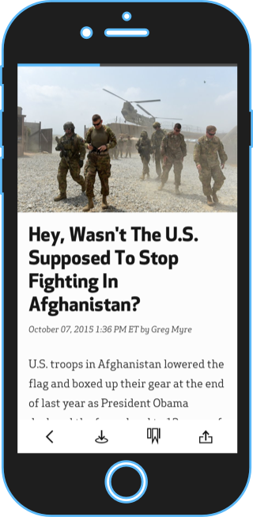
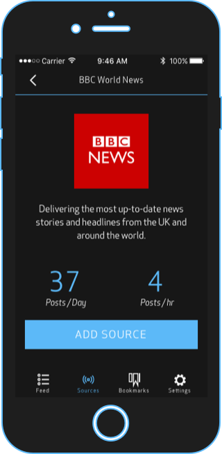

Today's news apps and aggregators offer features that are on opposite ends of the spectrum. NewsCycle combines user curated sources in an unified interface and readable interface.
Additionally, most rss readers show you how many articles a user has unread. This can cause anxiety. NewsCycle displays only the articles and posts within a 12 hour period on one feed. This eliminates unread counters and anxiety while allowing you to stay current with your news.
The article viewer optimizes the content within an article and displays the it on a clutter free display. The text is easy to read. Photos are guarenteed to be visable.
Each source has a profile that shows how many posts per day and hour. This can be useful when deciding whether to add the source and how it could potentially affect the user's feed.
